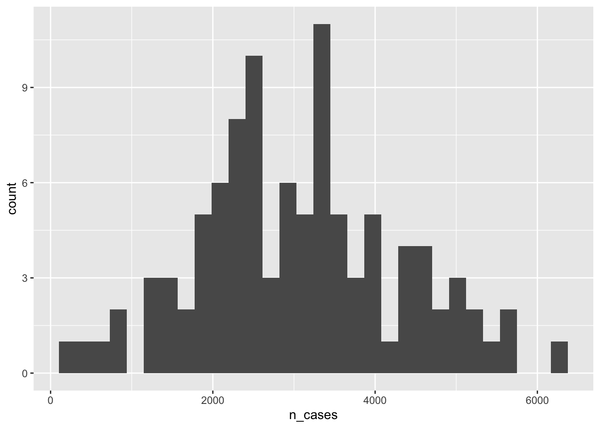
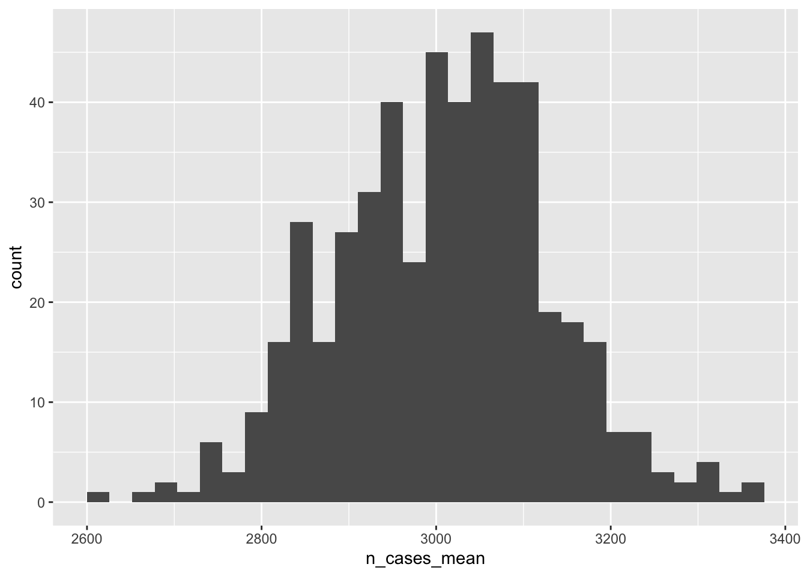
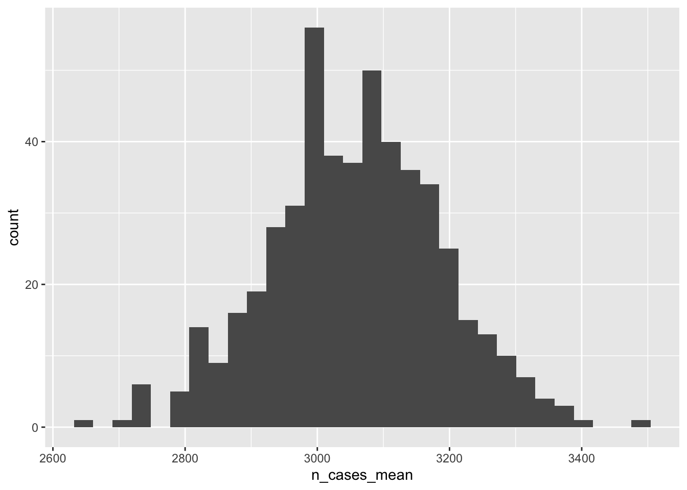

Monte Carlo simulations and boots with the purrr::map_dfr()
Michael D Garber
2022-08-09

{kind=link}
1 Learning objectives
Provide a working definition of Monte Carlo simulations and bootstrapping.
Perform each using R.
2 Motivation
2.1 Sources of uncertainty from multiple sources
Almost any epidemiological or statistical analysis has uncertainty. Uncertainty may arise within the dataset available for analysis (the sample) or, if we aim to infer characteristics of a larger population from the sample, from sampling. For example, suppose we want to estimate the prevalence of Covid-19 in a county. To do so, we randomly sample 1,000 people from that county and test them using at-home antigen tests. Home tests have good specificity but fairly poor sensitivity,1 meaning some of the negative results probably were truly positive (false negative). And because the poor sensitivity is a property of the test, not the sampling, this error is expected to occur regardless of the sample size. In addition to this systematic error in measurement, uncertainty arises from the sampling because we don’t know if the Covid prevalence among the 1,000 people we tested represent that of the county. By chance, we could have tested a particularly healthy or sick sample.
In our final estimate of prevalence, how would we go about summarizing its uncertainty, considering both the expected error in measurement and random error from sampling? Statistics of course has fundamental methods for estimating uncertainty from multiple sources, but many traditional methods involve complex math.2 To simplify the math, analysts often make assumptions that may not hold, for example that random variables considered in the analysis are independent from one another. In this particular example, the two sources of uncertainty (test accuracy and sampling) are actually probably independent from one another, but that independence often does not hold.
2.2 When independence between sources of uncertainty does not hold
For example, in my dissertation, I aimed to estimate the total amount of bicycling on every road in Atlanta. I had two sources of information, both of which had uncertainty. The first was a sample of bicycling on every roadway obtained from a smartphone app, inducing sampling variability and probably other sources of bias.3 The second was a set of about 15 bicycle counters located throughout the city, assumed to accurately measure all bicycling. I used these counters to estimate the proportion of bicyclists captured by the app. In this analysis, bike traffic in the smartphone-generated sample was correlated with the proportion captured in the app over the counter locations, meaning estimating the variance of their product would require me to consider this correlation. Accurately estimating the variance arising from both of these inter-related sources by appropriately considering their covariance using traditional pen-and-paper statistical methods, and propagating that combined uncertainty through other steps in the analysis which may themselves have uncertainty, would be difficult.
3 Estimating variability via repeated (re)sampling of random variations
Fortunately, we can estimate uncertainty using the computer which largely obviates the need to do complex math. Two broad (and, depending on the definition, overlapping) ways to estimate uncertainty using computer-based simulation techniques are Monte Carlo simulations and bootstrapping. In addition to easing the math, these simulation methods can help the analyst visualize how and when something varies in the analysis, which facilitates clarity and understanding.
3.1 Monte Carlo simulations
“Monte Carlo simulation is a method of analysis based on artificially recreating a chance process (usually with a computer), running it many times, and directly observing the results.”4
An important aspect of a traditional Monte Carlo simulation is that the distribution (i.e., its mean and variance) of each individual source of uncertainty is specified by the analyst. It is not estimated from the data. Monte Carlo simulations are useful to propagate multiple sources of variation throughout an analysis pipeline to assess the impact of all sources of uncertainty on the final result. And, as noted, they’re especially helpful compared with traditional (non-computer-based) statistical methods when those sources of variation are correlated with one another.
3.2 Bootstrapping
Monte Carlo simulation in its typical implementation cannot, however, directly estimate the sampling distribution. But bootstrapping can.
“In statistics…, bootstrapping has come to mean to resampling [with replacement] repeatedly and randomly from an original, initial sample using each bootstrapped sample to compute a statistic. The resulting empirical distribution of the statistic is then examined and interpreted as an approximation to the true sampling distribution.”5
The bootstrap was introduced by Brad Efron in the late 1970s.6 There are many forms of bootstrapping, including ways to bootstrap residuals from regression models.7 The most essential is simply re-sampling entire observations from the sample, summarizing each new sample, and using the distribution of those summary statistics to infer the sampling distribution.
It is certainly similar to Monte Carlo techniques and might be viewed as a subset thereof. The key difference is that the bootstrap estimates a distribution using data we have, and the Monte Carlo technique described above
4 Example code for each method using purrr::map_dfr()
4.1 Monte Carlo simulation
Suppose we have a state with 100 counties. We simulate one single dataset, specifying that the mean county population is 1,000 and the probability of a binary demographic variable (dem; say urban versus rural) is 0.5. The prevalence (prev) depends in part on pop and dem, and the number of cases in the county is estimated from pop and prev.
library(tidyverse)
library(truncnorm)
set.seed(11)#set the seed so this dataset is always the same.
monte_carlo_sim_frozen = 1:100 %>%
as_tibble() %>%
rename(county_id = value) %>%
mutate(
state = 1,
pop = rpois(n=n(), lambda=10000), #poisson dist. mean = var=1000
dem = rbinom(n=n(), size=1, prob =.5), #binomial dist.
prev = rtruncnorm( #truncated normal so prevalence is bounded by 0,1
n=n(),
a=0,
b=1,
mean=0.05+(pop/50000)+(dem/10),
sd=0.05 +(pop/200000)+(dem/40)),
n_cases = as.integer(pop*prev),
)
monte_carlo_sim_frozen## # A tibble: 100 × 6
## county_id state pop dem prev n_cases
## <int> <dbl> <int> <int> <dbl> <int>
## 1 1 1 9940 1 0.492 4891
## 2 2 1 9780 1 0.455 4448
## 3 3 1 9863 1 0.492 4849
## 4 4 1 9884 0 0.238 2352
## 5 5 1 10132 0 0.243 2464
## 6 6 1 10062 1 0.435 4378
## 7 7 1 9995 0 0.177 1773
## 8 8 1 9995 1 0.634 6340
## 9 9 1 9965 0 0.223 2219
## 10 10 1 9995 0 0.211 2111
## # … with 90 more rows
## # ℹ Use `print(n = ...)` to see more rowsNote that population pop and prev are correlated. That is, they’re not independent from one another, so when estimating variability of their product, n_cases, that correlation should be considered.
cor(monte_carlo_sim_frozen$pop,
monte_carlo_sim_frozen$prev)## [1] -0.05167318What is the mean and standard deviation number of cases per county? Note we have not run any replications yet. This is just one iteration of the theoretical dataset of counties in a state.
monte_carlo_sim_frozen %>%
group_by(state) %>%
summarise(
n_cases_mean = mean(n_cases),
n_cases_sd = sd(n_cases)) %>%
ungroup()## # A tibble: 1 × 3
## state n_cases_mean n_cases_sd
## <dbl> <dbl> <dbl>
## 1 1 3053. 1250.What is the distribution of the number of cases between counties in the state for this one replication?
monte_carlo_sim_frozen %>%
ggplot(aes(n_cases))+
geom_histogram()## `stat_bin()` using `bins = 30`. Pick better value with `binwidth`.
4.1.1 Define a function for replications
Now let’s randomly vary values of the variables over several replications. In this code, we will create a function that will create new variables that will change. Functions are described in the functions chapter of R 4 Data Science. At the end of this module, I have another example of how to use a function in a dplyr pipe.
Create a function for the creation of this dataset, run it 500 times, and find the mean of the means over those 500 iterations. The argument our function takes is rep_id_val. Its value is in the mutate() step to create a variable called rep_id.
monte_carlo_sim_fun = function(rep_id_val){
monte_carlo_sim_df = 1:100 %>%
as_tibble() %>%
rename(county_id = value) %>%
mutate(
state = 1,
pop = rpois(n=n(), lambda=10000), #mean = var=1000
dem = rbinom(n=n(), size=1, prob =.5),
prev = rtruncnorm(
n=n(),
a=0,
b=1,
mean=0.05+(pop/50000)+(dem/10),
sd=0.05 +(pop/200000)+(dem/40)),
n_cases = as.integer(pop*prev),
rep_id = rep_id_val #add replication ID
)
}To see how the function works, run one iteration of it:
monte_carlo_sim_once = monte_carlo_sim_fun(rep_id_val = 5)
monte_carlo_sim_once## # A tibble: 100 × 7
## county_id state pop dem prev n_cases rep_id
## <int> <dbl> <int> <int> <dbl> <int> <dbl>
## 1 1 1 9858 1 0.177 1747 5
## 2 2 1 9890 0 0.424 4191 5
## 3 3 1 9960 0 0.137 1362 5
## 4 4 1 9885 0 0.425 4196 5
## 5 5 1 10003 1 0.517 5175 5
## 6 6 1 10000 1 0.350 3496 5
## 7 7 1 10134 0 0.248 2511 5
## 8 8 1 9834 0 0.189 1862 5
## 9 9 1 10050 1 0.157 1579 5
## 10 10 1 10221 1 0.133 1361 5
## # … with 90 more rows
## # ℹ Use `print(n = ...)` to see more rowsNow let’s run the function lots of times. Define the number of replications. Here, we are creating an integer vector ranging from 1 to 500.
rep_id_val_list = 1:500
class(rep_id_val_list)## [1] "integer"4.1.2 Run the replications
Simulate 500 versions of this state. In each replication, the values for the variables pop, dem, prev, and n_cases randomly vary according to their specified distribution. We use map_dfr() from the purrr package to run the simulation and then stack the results on top of one another, akin to mutate::bind_rows().
Take note the unusual structure of this code. The function we created above, monte_carlo_sim_fun(), is inside map_dfr(), and the list of replication ids, rep_id_val_list, begins the pipe sequence.
library(purrr) #make sure it's attached
set.seed(NULL) #allow it to vary differently each time.
monte_carlo_sim_lots = rep_id_val_list %>%
map_dfr(monte_carlo_sim_fun) Take a look at output.
monte_carlo_sim_lots## # A tibble: 50,000 × 7
## county_id state pop dem prev n_cases rep_id
## <int> <dbl> <int> <int> <dbl> <int> <int>
## 1 1 1 9882 0 0.332 3280 1
## 2 2 1 9933 0 0.179 1782 1
## 3 3 1 10195 1 0.198 2021 1
## 4 4 1 10030 1 0.475 4764 1
## 5 5 1 10106 1 0.481 4865 1
## 6 6 1 10145 1 0.263 2666 1
## 7 7 1 9824 1 0.518 5086 1
## 8 8 1 9971 0 0.252 2509 1
## 9 9 1 9968 0 0.141 1408 1
## 10 10 1 9985 1 0.181 1802 1
## # … with 49,990 more rows
## # ℹ Use `print(n = ...)` to see more rowsHow many rows?
nrow(monte_carlo_sim_lots)## [1] 50000How many distinct values of rep_id?
n_distinct(monte_carlo_sim_lots$rep_id)## [1] 5004.1.3 Summarize results
What’s the distribution of n_cases_mean over Monte Carlo replications? This is not the variability of the number of cases within the state between counties but rather the variability of the mean number of county-level cases for the state between replications.
monte_carlo_sim_lots %>%
group_by(rep_id,state) %>%
summarise(
n_cases_mean = mean(n_cases),
n_cases_sd = sd(n_cases)) %>%
ggplot(aes(n_cases_mean))+
geom_histogram()## `summarise()` has grouped output by 'rep_id'. You can override using the
## `.groups` argument.
## `stat_bin()` using `bins = 30`. Pick better value with `binwidth`.
What is the 2.5th, 50th (median), and 97.5th percentile of the mean number of cases between replications? This could be used to report a confidence interval around that estimated mean.
monte_carlo_sim_lots_summary = monte_carlo_sim_lots %>%
group_by(rep_id,state) %>% #group by both rep id and state
summarise(
n_cases_mean = mean(n_cases),
n_cases_sd = sd(n_cases)) %>%
group_by(state) %>% #now collapse over rep id
summarise(
n_cases_mean_ll = quantile(n_cases_mean, probs = 0.025, na.rm=TRUE),
n_cases_mean_med = quantile(n_cases_mean, probs = 0.5, na.rm=TRUE),
n_cases_mean_ul = quantile(n_cases_mean, probs = 0.975, na.rm=TRUE)
) %>%
ungroup() %>%
mutate(simulation_type = "monte-carlo")## `summarise()` has grouped output by 'rep_id'. You can override using the
## `.groups` argument.monte_carlo_sim_lots_summary## # A tibble: 1 × 5
## state n_cases_mean_ll n_cases_mean_med n_cases_mean_ul simulation_type
## <dbl> <dbl> <dbl> <dbl> <chr>
## 1 1 2776. 2999. 3246. monte-carlo4.2 Bootstrap
Now let’s bootstrap monte_carlo_sim_frozen, again supposing that even though it was generated randomly, it is now viewed as a single frozen sample - the one we drew and have access to. We can estimate the sampling distribution by re-sampling it with replacement with sampling probability of 1, meaning all rows will be re-sampled. This means that, in a given sample, some counties will repeat, and some will not appear at all.
Here’s one example:
monte_carlo_sim_one_boot = monte_carlo_sim_frozen %>%
slice_sample(prop=1,replace=TRUE)Take a look:
monte_carlo_sim_one_boot## # A tibble: 100 × 6
## county_id state pop dem prev n_cases
## <int> <dbl> <int> <int> <dbl> <int>
## 1 70 1 9897 1 0.345 3413
## 2 43 1 9984 0 0.234 2336
## 3 61 1 9910 1 0.520 5148
## 4 9 1 9965 0 0.223 2219
## 5 34 1 9924 1 0.440 4363
## 6 20 1 9981 1 0.564 5626
## 7 1 1 9940 1 0.492 4891
## 8 17 1 9955 0 0.257 2553
## 9 58 1 10015 0 0.0619 619
## 10 10 1 9995 0 0.211 2111
## # … with 90 more rows
## # ℹ Use `print(n = ...)` to see more rowsAs expected, we have the same number of rows, but fewer unique values for county_id. Some are repeating.
nrow(monte_carlo_sim_one_boot)## [1] 100n_distinct(monte_carlo_sim_one_boot$county_id)## [1] 65Repeat this bootstrap procedure 500 times by first writing a function and then iterating replications through that function using purrr::map_dfr()
4.2.1 Define a function for replications
boot_fun = function(rep_id_val){
monte_carlo_sim_boot = monte_carlo_sim_frozen %>%
slice_sample(prop=1,replace=TRUE) %>%
mutate(rep_id = rep_id_val) #to keep track of reps
}4.2.2 Run the replications
Simulate 500 versions of this re-sampling. We again use map_dfr() from the purrr package to run the function and then stack the results on top of one another. Note the unusual structure of this code. The function we created above, monte_carlo_sim_fun(), is inside map_dfr(), and the list of replication ids, rep_id_val_list, begins the pipe sequence.
boot_lots = rep_id_val_list %>%
map_dfr(boot_fun) 4.2.3 Summarize results
boot_lots## # A tibble: 50,000 × 7
## county_id state pop dem prev n_cases rep_id
## <int> <dbl> <int> <int> <dbl> <int> <int>
## 1 48 1 9804 0 0.157 1539 1
## 2 40 1 9936 0 0.172 1707 1
## 3 68 1 10085 0 0.396 3996 1
## 4 91 1 9947 1 0.377 3752 1
## 5 97 1 10028 1 0.456 4568 1
## 6 53 1 10075 1 0.273 2750 1
## 7 64 1 9909 0 0.343 3403 1
## 8 97 1 10028 1 0.456 4568 1
## 9 3 1 9863 1 0.492 4849 1
## 10 100 1 10128 1 0.222 2252 1
## # … with 49,990 more rows
## # ℹ Use `print(n = ...)` to see more rowsWhat’s the distribution of n_cases_mean over bootstrap replications?
boot_lots %>%
group_by(rep_id,state) %>%
summarise(
n_cases_mean = mean(n_cases),
n_cases_sd = sd(n_cases)) %>%
ggplot(aes( n_cases_mean))+
geom_histogram()## `summarise()` has grouped output by 'rep_id'. You can override using the
## `.groups` argument.
## `stat_bin()` using `bins = 30`. Pick better value with `binwidth`.
We can use the empirical distribution of resampled results to estimate a confidence interval for the sampling distribution. This is a confidence interval for the estimated mean number of cases in the state:
boot_lots_summary = boot_lots %>%
group_by(rep_id,state) %>% #group by both rep id and state
summarise(
n_cases_mean = mean(n_cases),
n_cases_sd = sd(n_cases)) %>%
group_by(state) %>% #now collapse over rep id
summarise(
n_cases_mean_ll = quantile(n_cases_mean, probs = 0.025, na.rm=TRUE),
n_cases_mean_med = quantile(n_cases_mean, probs = 0.5, na.rm=TRUE),
n_cases_mean_ul = quantile(n_cases_mean, probs = 0.975, na.rm=TRUE)
) %>%
ungroup() %>%
mutate(simulation_type = "bootstrap")## `summarise()` has grouped output by 'rep_id'. You can override using the
## `.groups` argument.boot_lots_summary## # A tibble: 1 × 5
## state n_cases_mean_ll n_cases_mean_med n_cases_mean_ul simulation_type
## <dbl> <dbl> <dbl> <dbl> <chr>
## 1 1 2810. 3061. 3310. bootstrapHow does this estimate of the sampling distribution of n_cases_mean align with the truth? We happen to know the truth here. It’s the distribution of n_cases_mean between the Monte Carlo simulations, defined above.
monte_carlo_sim_lots_summary %>%
bind_rows(boot_lots_summary)## # A tibble: 2 × 5
## state n_cases_mean_ll n_cases_mean_med n_cases_mean_ul simulation_type
## <dbl> <dbl> <dbl> <dbl> <chr>
## 1 1 2776. 2999. 3246. monte-carlo
## 2 1 2810. 3061. 3310. bootstrap5 Summary of Monte Carlo simulations and bootstrapping
Advantages of these computation-based simulation methods
Makes explicit where the variation is coming from and aids in intuition.
Easily accommodates correlation between variables and avoids difficult math.
Comparison between the two:
Difference: Is variability specified by the user or is it estimated from the sample?
In common: Both use repeated sampling to estimate uncertainty. Monte Carlo simulations may sample from a specified distribution to generate values for a variable, and bootstrapping samples the rows of the data at hand.
Broad steps for each:
- Define a function that contains steps of the analysis with variability.
- Run that function lots of times using
purrr::map_dfr() - Summarize the distribution of the results. Conventionally, to report percentile-based confidence intervals,8 take the median, 2.5th, and 97.5th percentiles.
6 More on functions
In addition to their use for simulations as above, functions can also be used simply to reduce repetition in code. Sometimes you end up writing the same or similar code many times and apply that code to several datasets. Here is a set of dplyr steps combined into one function.
do_some_dplyr_stuff = function(df){
df %>%
mutate(
example_var_x=rnorm(n=n(), mean=0, sd=1),
example_var_y=4,
example_var_z = rbinom(n=n(), size=1, prob=.2)
) %>%
dplyr::select(state, county_id, starts_with("example"))
} The argument of the function here is a dataframe or tibble arbitrary called df . When we run this function in a piped chain, that df will be taken as the implied object, and the function can be run as if it were any other dplyr function.
Let’s apply that function to one county from our monte_carlo_sim_frozen dataset.
function_result_one_county = monte_carlo_sim_frozen %>%
filter(county_id==2) %>%
do_some_dplyr_stuff()
function_result_one_county## # A tibble: 1 × 5
## state county_id example_var_x example_var_y example_var_z
## <dbl> <int> <dbl> <dbl> <int>
## 1 1 2 -1.57 4 0References
Copyright © 2022 Michael D. Garber